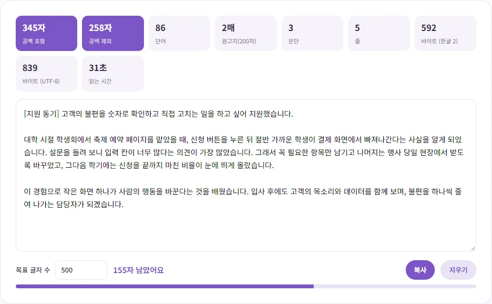
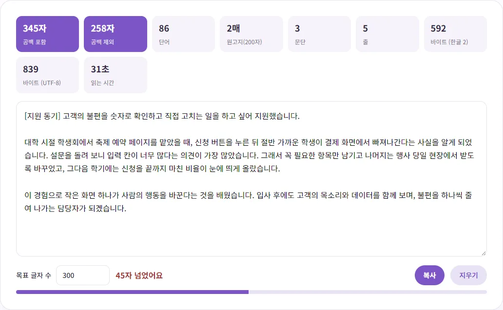

자기소개서 글자 수, 공백 포함일까 제외일까?
자소서 문항마다 '1,000자 이내'라고 적혀 있는데, 띄어쓰기도 세는 건지, 바이트 제한은 또 뭔지 헷갈리셨죠? 이 글에서는 글자 수를 세는 기준들이 어떻게 다른지 예시 숫자로 보여 드리고, 제한에 딱 맞게 글을 줄이고 늘리는 요령까지 정리했어요.
같은 글인데 숫자가 왜 다를까요?
글자 수를 세는 방법은 생각보다 여러 가지예요. 직접 지어낸 짧은 자기소개서 예시(세 문단)를 벤토툴 글자 수 세기에 넣어 봤더니, 같은 글이 기준에 따라 이렇게 달랐어요.
| 기준 | 예시 글 결과 | 무엇을 세나요 |
|---|---|---|
| 공백 포함 | 345자 | 띄어쓰기, 줄바꿈까지 모두 한 글자 |
| 공백 제외 | 258자 | 띄어쓰기·탭·줄바꿈을 빼고 남은 글자 |
| 바이트 (한글 2) | 592바이트 | 영문·숫자·기본 기호 1, 나머지 2 |
| 바이트 (UTF-8) | 839바이트 | 실제 저장 크기, 한글 한 글자 3 |

공백 포함과 제외만 해도 87자 차이가 나요. 한국어 글은 띄어쓰기가 많아서 보통 이 정도 차이가 생겨요. 그러니 '1,000자'라는 제한이 어느 기준인지에 따라 실제로 쓸 수 있는 분량이 꽤 달라져요.
공백 포함과 공백 제외
'공백 포함'은 띄어쓰기 한 칸, 줄바꿈 한 번도 한 글자로 세요. 실수로 띄어쓰기를 두 번 하면 두 글자가 돼요. 실제로 '가 나'(띄어쓰기 두 칸)를 넣어 보니 공백 포함 4자, 공백 제외 2자로 나왔어요. 줄바꿈도 마찬가지라, 'a', 줄바꿈, 'b'는 공백 포함 3자였어요.
'공백 제외'는 보이는 글자만 세요. 띄어쓰기를 어떻게 하든 숫자가 같아서, 분량을 공정하게 비교하려는 곳에서 쓰기도 해요.
워드나 한글 같은 문서 프로그램에도 글자 수 보기 기능이 있지만, 프로그램마다 줄바꿈이나 문단 기호를 세는 방식이 다를 수 있어요. 문서 프로그램에서 쓴 글을 옮길 때는 숫자가 조금 달라도 이상한 일이 아니니, 최종 숫자는 지원서 입력 칸 기준으로 맞추세요. 또 이 도구의 '원고지(200자)' 매수는 공백 포함 글자 수를 200으로 나눠 올림한 값이라, 문단 첫 칸 띄우기 같은 원고지 쓰기 규칙은 반영되지 않은 대략적인 숫자예요.
어느 쪽을 쓰는지는 회사와 채용 사이트마다 달라요. 모든 채용 사이트에 공통으로 적용되는 공식 기준은 없고, 기준이 공고문에 따로 적혀 있지 않은 경우도 많아요. 확인하는 순서는 이래요.
- 채용 공고나 지원서 문항 옆 안내에 '공백 포함', '띄어쓰기 포함' 같은 말이 있는지 보세요.
- 지원서 입력 칸에 글자 수 표시가 있다면 그 숫자가 최종 기준이에요. 짧은 문장을 넣어 보고 띄어쓰기를 넣었다 뺐다 하면 어느 기준인지 바로 알 수 있어요.
- 둘 다 알 수 없다면 더 엄격한 쪽, 즉 '공백 포함' 기준으로 제한 안에 맞추세요. 공백 포함으로 맞으면 공백 제외로도 당연히 맞아요.
바이트 제한은 무엇이 다른가요?
가끔 '2,000바이트 이내'처럼 바이트로 제한하는 곳도 있어요. 바이트는 컴퓨터가 글자를 저장하는 크기라서, 글자마다 크기가 달라요. 영문과 숫자는 1바이트인데, 한글은 시스템이 어떤 방식(문자 인코딩)을 쓰느냐에 따라 2바이트 또는 3바이트예요.
- 한글 3바이트: 요즘 웹에서 가장 많이 쓰는 UTF-8 방식이에요. 국제 표준 문서(RFC 3629)에 따르면 UTF-8은 유니코드 번호 U+0800~U+FFFF 범위의 문자를 3바이트로 저장하는데, 한글 완성형 글자(가~힣, U+AC00~U+D7A3)가 이 범위에 들어가요.
- 한글 2바이트: 예전부터 쓰던 한글 전용 인코딩 방식에서는 한글 한 글자를 2바이트로 쳐요. 오래된 시스템이나 일부 양식에서 이 기준을 쓰기도 해요.
벤토툴은 두 가지를 모두 보여 줘요. 다만 코드를 확인해 보니 세는 방식에 조금 차이가 있어요. '바이트 (한글 2)'는 영문·숫자·기본 기호(아스키 문자)만 1바이트, 나머지는 한자·이모지·가운뎃점·둥근 따옴표까지 모두 2바이트로 세요. '바이트 (UTF-8)'는 실제 UTF-8 크기라서 한글 3바이트, 가운뎃점(·) 2바이트, 이모지 4바이트로 나왔어요. 실제로 '가' 한 글자는 2바이트/3바이트, 둥근 따옴표로 감싼 '“가”'는 6바이트/9바이트였어요.
바이트 제한이 있는 곳은 어느 방식인지 알려 주지 않는 경우가 많아요. 이때도 입력 칸의 표시 숫자가 최종 기준이고, 모르겠다면 더 크게 나오는 UTF-8 기준으로 맞춰 두면 안전해요. 위 예시 글은 2바이트 기준으로는 592바이트였지만 UTF-8로는 839바이트였어요.
목표 글자 수 기능 쓰는 법
- 글자 수 세기에 글을 붙여넣거나 바로 쓰세요. 쓸 때마다 숫자가 바뀌어요.
- 아래 '목표 글자 수'에 문항의 제한을 적으세요. 'n자 남았어요'와 진행 막대가 보여요.
- 제한을 넘으면 'n자 넘었어요'가 빨간색으로 바뀌어요.
- 다 맞췄으면 '복사'를 눌러 지원서 입력 칸에 붙여넣으세요.

한 가지 주의할 점은, 목표 막대는 항상 '공백 포함' 기준으로 계산된다는 거예요. 제한이 공백 제외 기준이라면 막대 대신 위쪽 '공백 제외' 숫자를 보면서 맞추세요.
또 쓴 글은 서버로 가지 않지만, 실수로 창을 닫아도 되살릴 수 있게 이 브라우저 안에 임시로 남아요. 학교나 PC방처럼 여러 사람이 쓰는 컴퓨터라면 다 쓴 뒤 '지우기'를 눌러 주세요.
글자 수 딱 맞추는 요령
넘쳤을 때 줄이는 법
- 연속 띄어쓰기·문장 끝 공백 정리: 눈에 안 보이지만 공백 포함 글자 수에 들어가요. 몇 자가 아쉬울 때 먼저 확인하세요.
- 겹치는 말 빼기: '~할 수 있었던 것 같습니다'는 '~했습니다'로, '~라고 생각합니다'는 꼭 필요할 때만 쓰세요.
- 문항을 다시 적는 첫 문장 줄이기: '제가 지원한 동기는 ~입니다'처럼 질문을 되풀이하는 문장은 핵심부터 시작하면 줄어요.
- 예시는 하나를 깊게: 경험을 세 개 나열하기보다 하나를 구체적으로 쓰는 게 분량도 줄고 읽기도 좋아요.
모자랄 때 늘리는 법
- 경험의 '결과'에 숫자를 넣으세요. 무엇이 얼마나 달라졌는지 한 문장만 더해도 설득력이 커져요.
- 그 경험에서 배운 점이 지원하는 일에 어떻게 이어지는지 한 문장으로 연결하세요.
- 공백만 늘려 분량을 채우는 건 피하세요. 읽는 사람에게 금방 보여요.
입력 칸에 옮긴 뒤 한 번 더
사이트마다 줄바꿈이나 특수문자를 세는 방식이 다를 수 있어서, 여기서 맞춘 숫자와 몇 자 차이가 날 수 있어요. 제한에 꽉 맞추기보다 10~20자 정도 여유를 두고, 붙여넣은 뒤 입력 칸의 숫자를 꼭 확인하세요. 이모지나 특수 기호는 사이트에 따라 2자로 세거나 깨져 보일 수 있으니 자소서에는 쓰지 않는 게 무난해요.
지원서에 붙일 증명사진도 준비해야 한다면 이력서 증명사진 규격과 집에서 만드는 법과 '사진은 ○○KB 이하' 오류 해결법을 함께 보세요.
참고한 자료
- RFC 3629 - UTF-8, a transformation format of ISO 10646 (UTF-8 바이트 수 규정, 영문)
- Unicode - Hangul Syllables 코드표 (U+AC00~U+D7AF, 영문)
글에서 소개한 도구, 회원가입 없이 바로 써 보세요.
🔢 글자 수 세기 바로 쓰기